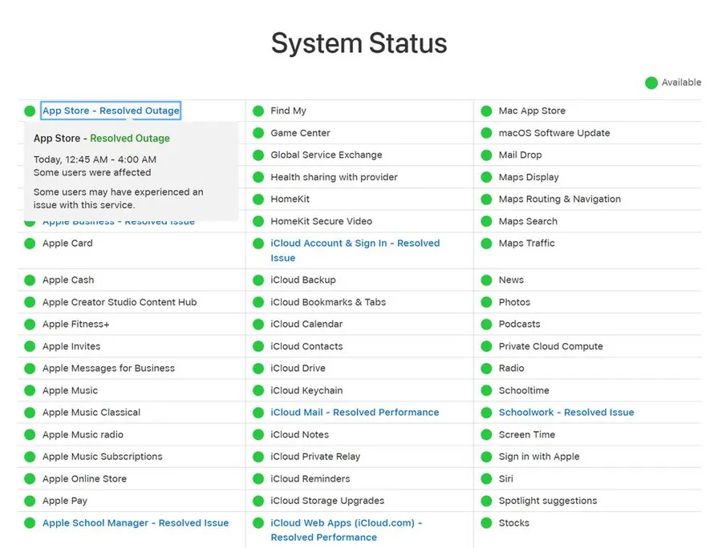

89科技/AI · 102
苹果服务全球大宕机：Apple Pay、iCloud、App Store 集体失联，官方称内部系统更新所致
四维 85跨源 ×1.05（IT之家 / 9to5Mac / HN 641 点 / 苹果状态页各自报道）×1.05≈ 89
苹果 11 月 17 日因一次内部系统更新引发大范围服务中断，Apple Pay、iCloud、Apple Support、App Store 等服务一度无法登录或使用，官方强调并非网络攻击、目前已全部恢复。故障监测平台 Downdetector 显示美东时间 12:20 左右 Apple Pay 报障量激增，Hacker News 相关帖冲到 641 点、355 条评论。同期微软、AWS、银行甚至美国国家安全局机密通信网 NSANet 也接连报障。
💡 点评一次内部更新就能让从支付到身份认证的一整条链断掉，暴露的是「便利都压在同一家基础设施上」的脆弱性；当宕机从消费端蔓延到国家安全网络，可靠性就不再只是体验问题。
IT之家 / Hacker News / 9to5Mac · 原文 →